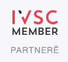
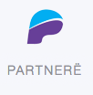
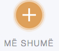
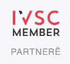
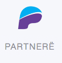
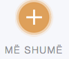

IKAF është shoqatë e specializuar për auditorë të jashtëm, kontabilistë, auditorë të brendshëm dhe vlerësues. IKAF përfaqëson afro 5,000 individë të regjistruar deri më tani. Roli ynë është të edukojmë, përfaqësojmë dhe mbështesim anëtarët tanë.
Anëtarët tanë punojnë në pozita të larta në praktikë dhe industri. Ne jemi të përkushtuar për të rivendosur besimin në çdo nivel të ekonomisë. Ne punojmë me institucione dhe biznese për të rritur ndërgjegjësimin për rëndësinë e këshillave të shëndosha financiare.
IKAF për 14 vjet po ndërton përgjegjësi në avokim, certifikime profesionale dhe edukim të vazhdueshëm
IKAF ofron certifikime profesionale dhe trajnime të njohura
ndërkombëtarisht nga institute ndërkombëtare si IMA, AAT, ICB dhe IIA Global. ABONOHU
Ne mbështesim, zhvillojmë dhe inkurajojmë anëtarët tanë për të siguruar
cilësi të lartë të shërbimeve dhe për të maksimizuar profitin e tyre
Certifikimet IKAF janë të njohura edhe nga disa organizata ndërkombëtare

Partner për trajnime në Kosovë dhe rajonin Ballkanit për IMA, AAT, ICB

SMIS, Forumi, E-Udhezime praktike, E-Shërbime, E-Mësimi & E-Testimi

Lider në organizimin e seminareve për Edukim të Vazhdueshëm Profesional

Partneritet me Institute dhe Universitete, vendore & ndërkombëtare

Anëtarët garantojnë cilësi të lartë falë certifikimit & edukimit të vazhdueshëm.
Në zhvillimin e karrierës së tyre në financa me IKAF
IKAF më mundësoj të ngritem edhe më shumë profesionalisht si Auditore e Brendshme. Nëse ju mund të ëndërroni dicka, ju mund ta arrini ate: Antarësohuni në IKAF.
Leonora Gafurri , Auditore e BrendshmeRezultatet e punës, falë përvojës së trajnimit në IKAF, janë duke u vlerësuar shumë edhe nga top menaxherët e kompanisë në të cilën punoj. Kam vendosur të ndjek edhe një nivel tjetër.
Adriana Bajrami , KontabilistëAskush më mirë se une nuk e vëren avancimin e Institutit, sepse kam pasur fatin të jem anëtarë që nga viti 2007. Organizimi i Semenirave në kuadër të EVP-së kanë qenë shumë frytdhënëse.
Fitim Xhiha , Kontabilistë i ÇertifikuarÇdo gjë që duhet të dini për përditësimet dhe ngjarjet e fundit në IKAF
Prishtinë, 22 Mars 2024
22 Mars, 2024
Çka është teknologjia ChatGPT?
22 Mars, 2024
Nëse keni fituar titullin Kontabilist i Certifikuar, atëherë e...
22 Mars, 2024

LIGJI NR. 08/L-257 PËR ADMINISTRIMIN E PROCEDURAVE TATIMORE
22 Mars, 2024
 




